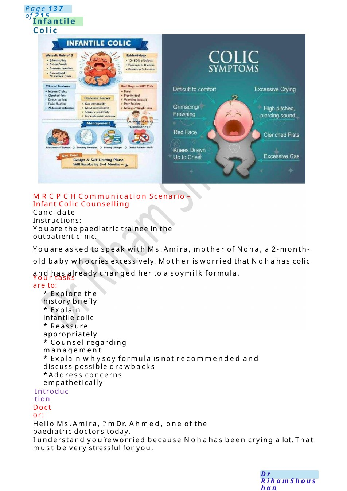
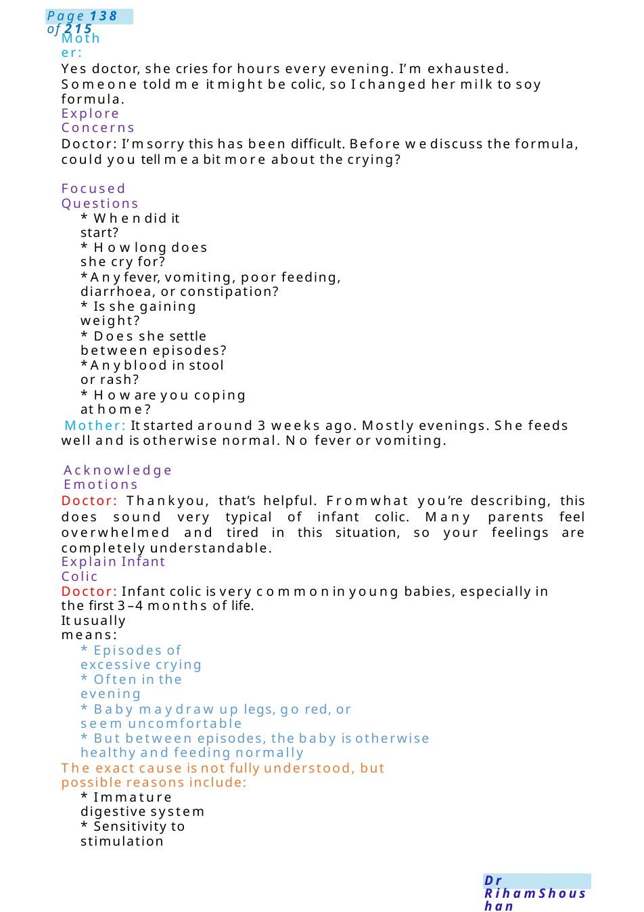
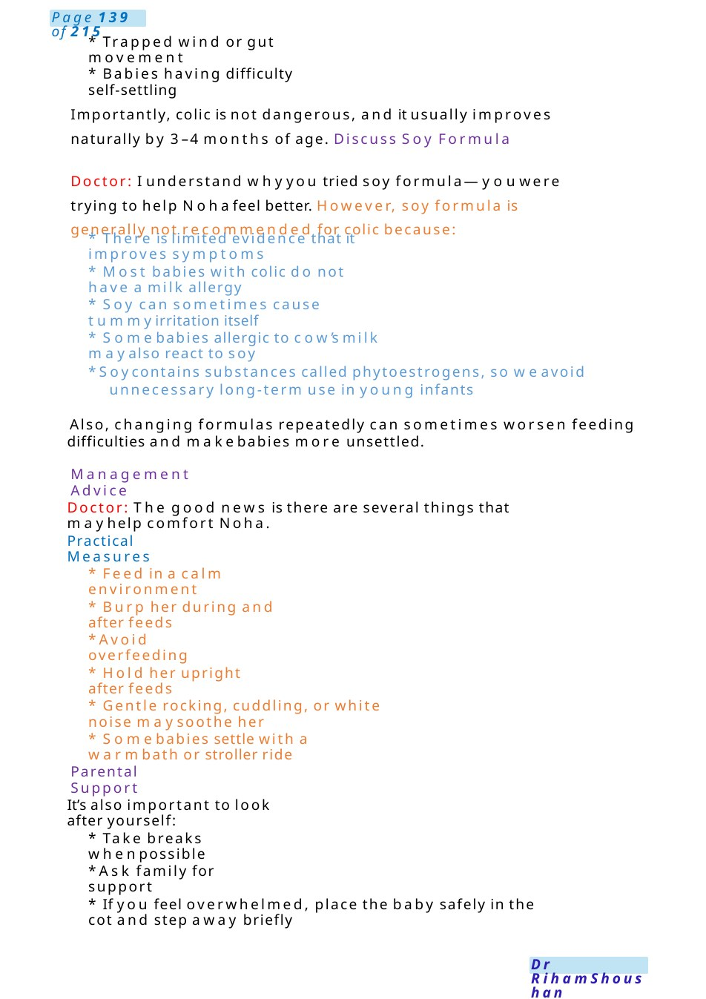
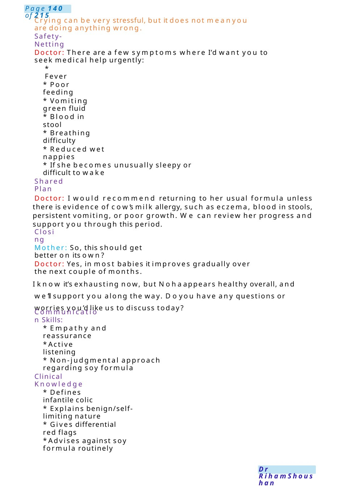
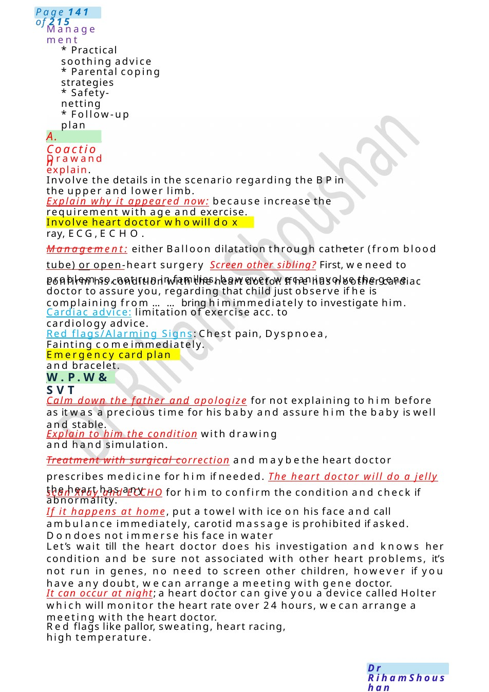

Infantile Colic
MRCPCHCommunication Scenario – Infant Colic Counselling Youare the paediatric trainee in the outpatient clinic.
Scenario Summary
MRCPCHCommunication Scenario – Infant Colic Counselling Youare the paediatric trainee in the outpatient clinic.
Full Original Scenario

Infantile Colic
MRCPCHCommunication Scenario – Infant Colic Counselling
Candidate Instructions:
Youare the paediatric trainee in the outpatient clinic.
Youare asked to speak with Ms.Amira, mother of Noha, a 2-month-old baby whocries excessively. Mother is worried that Nohahas colic and has already changed her to a soymilk formula.
Your tasks are to:
- Explore the history briefly
- Explain infantile colic
- Reassure appropriately
- Counsel regarding management
- Explain whysoy formula is not recommended and discuss possible drawbacks
- Address concerns empathetically
Introduction
Doctor:
Hello Ms.Amira, I’m Dr. Ahmed, one of the paediatric doctors today.
I understand you’re worried because Nohahas been crying a lot. That must be very stressful for you.

Mother:
Yes doctor, she cries for hours every evening. I’m exhausted. Someone told me it might be colic, so I changed her milk to soy formula.
Explore Concerns
Doctor: I’msorry this has been difficult. Before wediscuss the formula, could you tell mea bit more about the crying?
Focused Questions
- Whendid it start?
- Howlong does she cry for?
- Anyfever, vomiting, poor feeding, diarrhoea, or constipation?
- Is she gaining weight?
- Does she settle between episodes?
- Anyblood in stool or rash?
- Howare you coping at home?
Mother: It started around 3 weeks ago. Mostly evenings. She feeds well and is otherwise normal. No fever or vomiting.
Acknowledge Emotions
Doctor: Thankyou, that’s helpful. Fromwhat you’re describing, this does sound very typical of infant colic. Many parents feel overwhelmed and tired in this situation, so your feelings are completely understandable.
Explain Infant Colic
Doctor: Infant colic is very commonin young babies, especially in the first 3–4 months of life.
It usually means:
- Episodes of excessive crying
- Often in the evening
- Baby maydraw up legs, go red, or seem uncomfortable
- But between episodes, the baby is otherwise healthy and feeding normally
The exact cause is not fully understood, but possible reasons include:
- Immature digestive system
- Sensitivity to stimulation

- Trapped wind or gut movement
- Babies having difficulty self-settling
Importantly, colic is not dangerous, and it usually improves naturally by 3–4 months of age. Discuss Soy Formula
Doctor: I understand whyyou tried soy formula—youwere trying to help Nohafeel better. However, soy formula is generally not recommended for colic because:
- There is limited evidence that it improves symptoms
- Most babies with colic do not have a milk allergy
- Soy can sometimes cause tummyirritation itself
- Somebabies allergic to cow’s milk mayalso react to soy
- Soycontains substances called phytoestrogens, so weavoid unnecessary long-term use in young infants
Also, changing formulas repeatedly can sometimes worsen feeding difficulties and makebabies more unsettled.
Management Advice
Doctor: The good news is there are several things that mayhelp comfort Noha.
Practical Measures
- Feed in a calm environment
- Burp her during and after feeds
- Avoid overfeeding
- Hold her upright after feeds
- Gentle rocking, cuddling, or white noise maysoothe her
- Somebabies settle with a warmbath or stroller ride
Parental Support
It’s also important to look after yourself:
- Take breaks whenpossible
- Ask family for support
- If you feel overwhelmed, place the baby safely in the cot and step away briefly

Crying can be very stressful, but it does not meanyou are doing anything wrong.
Safety-Netting
Doctor: There are a few symptoms where I’d want you to seek medical help urgently:
- Fever
- Poor feeding
- Vomiting green fluid
- Blood in stool
- Breathing difficulty
- Reduced wet nappies
- If she becomes unusually sleepy or difficult to wake
Shared Plan
Doctor: I would recommend returning to her usual formula unless there is evidence of cow’s milk allergy, such as eczema, blood in stools, persistent vomiting, or poor growth. We can review her progress and support you through this period.
Closing
Mother: So, this should get better on its own?
Doctor: Yes, in most babies it improves gradually over the next couple of months.
I know it’s exhausting now, but Nohaappears healthy overall, and we’ll support you along the way. Doyou have any questions or worries you’d like us to discuss today?
Communication Skills:
- Empathy and reassurance
- Active listening
- Non-judgmental approach regarding soy formula
Clinical Knowledge
- Defines infantile colic
- Explains benign/self-limiting nature
- Gives differential red flags
- Advises against soy formula routinely

A. Coaction
W.P.W&SVT
Management
- Practical soothing advice
- Parental coping strategies
- Safety-netting
- Follow-up plan
Drawand explain.
Involve the details in the scenario regarding the BPin the upper and lower limb.
Explain why it appeared now: because increase the requirement with age and exercise.
Involve heart doctor whowill do x ray, ECG,ECHO.
Management: either Balloon dilatation through catheter (from blood tube) or open-heart surgery Screen other sibling? First, weneed to confirm his condition with the heart doctor. If he has noother cardiac
problem so, not run in families, however wecan involve the gene doctor to assure you, regarding that child just observe if he is complaining from ......bring himimmediately to investigate him.
Cardiac advice: limitation of exercise acc. to cardiology advice.
Red flags/Alarming Signs: Chest pain, Dyspnoea, Fainting comeimmediately.
Emergency card plan and bracelet.
Calm down the father and apologize for not explaining to him before as it was a precious time for his baby and assure him the baby is well and stable.
Explain to him the condition with drawing and hand simulation.
Treatment with surgical correction and maybethe heart doctor prescribes medicine for him if needed. The heart doctor will do a jelly scan Xray and ECCHO for him to confirm the condition and check if
the heart has any abnormality.
If it happens at home, put a towel with ice on his face and call ambulance immediately, carotid massage is prohibited if asked. Dondoes not immerse his face in water
Let’s wait till the heart doctor does his investigation and knows her condition and be sure not associated with other heart problems, it’s not run in genes, no need to screen other children, however if you have any doubt, wecan arrange a meeting with gene doctor.
It can occur at night; a heart doctor can give you a device called Holter which will monitor the heart rate over 24 hours, wecan arrange a meeting with the heart doctor.
Red flags like pallor, sweating, heart racing, high temperature.